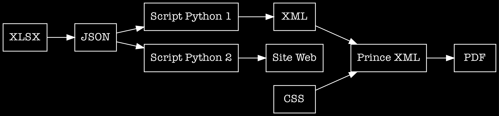
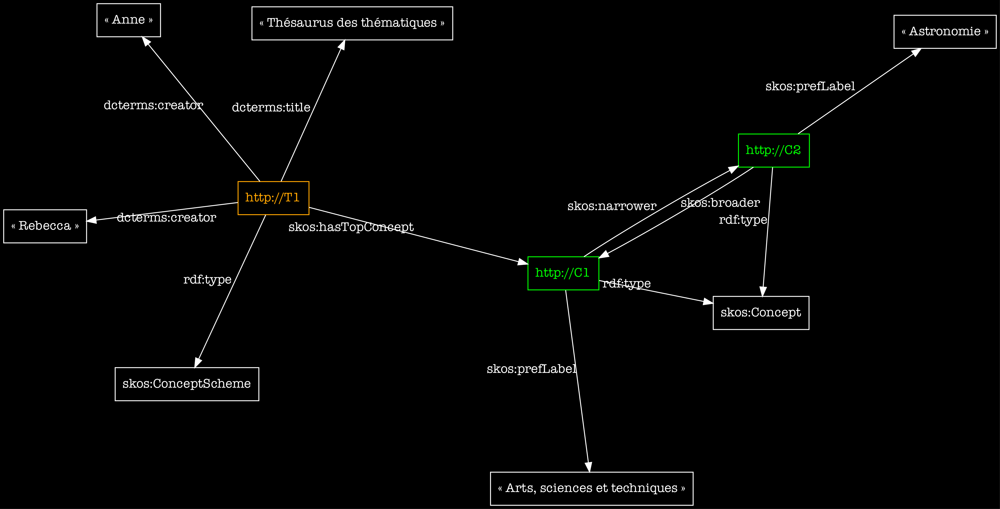

Cours de méthodologie
Nathalie Berton–Blivet ‹› Thomas Bottini
nathalie.berton-blivet@cnrs.fr | thomas.bottini@cnrs.fr
‹I›nstitut de ‹Re›cherche en ‹Mus›icologie
IReMus, UMR 8223 CNRS Sorbonne Université
[TB]
[NBB]
[TB]

| ID | Attribution |
|---|---|
| 0001 | Josquin |
➡
– Ne dit rien de l’activité de collecte de la donnée, du rapport à la source (aussi important que la donnée en elle-même si on parle de science).
– Ne dit rien du contexte argumentatif et du degré de certitude.
– Dans 10 ans, comment s’assurer que les chaînes de caractères correspondent bien à ce que l’auteur ou l’autrice avait en tête ?
Présentation d’un projet concret en cours : indexation du corpus d’estampes du Mercure galant 1678—1710 (IReMus/ObTIC).
Organisation, description et indexation du corpus.
Organisation du thésaurus.
Alignement sur des thésaurii mondiaux
Présentation d’un projet concret en cours : indexation du corpus d’estampes du Mercure galant 1678—1710 (IReMus/ObTIC).
Organisation, description et indexation du corpus.
Organisation du thésaurus.
Alignement sur des thésaurii mondiaux
Synergie scientifique (une idée : le projet Emblematica)
Présentation d’un projet concret en cours : indexation du corpus d’estampes du Mercure galant 1678—1710 (IReMus/ObTIC).
Organisation, description et indexation du corpus.
Organisation du thésaurus.
Alignement sur des thésaurii mondiaux
Synergie scientifique (une idée : le projet Emblematica)
Écueil épistémologique potentiel : confrontation entre approche bottom-up (localisée + située) et top-down (globalisée + détachée des pratiques effectives).
Présentation d’un projet concret en cours : indexation du corpus d’estampes du Mercure galant 1678—1710 (IReMus/ObTIC).
Organisation, description et indexation du corpus.
Organisation du thésaurus.
Alignement sur des thésaurii mondiaux
Synergie scientifique (une idée : le projet Emblematica)
Écueil épistémologique potentiel : confrontation entre approche bottom-up (localisée + située) et top-down (globalisée + détachée des pratiques effectives).
Formaliser un thésaurus avec SKOS (Simple Knowledge Organization System).

skos:definition, skos:prefLabel…) et des rapports qu’ils entretiennent (skos:narrower, skos:broader, skos:related…). Les entités historiques ne sont pas vraiment des concepts.skos:definition, skos:prefLabel…) et des rapports qu’ils entretiennent (skos:narrower, skos:broader, skos:related…). Les entités historiques ne sont pas vraiment des concepts.